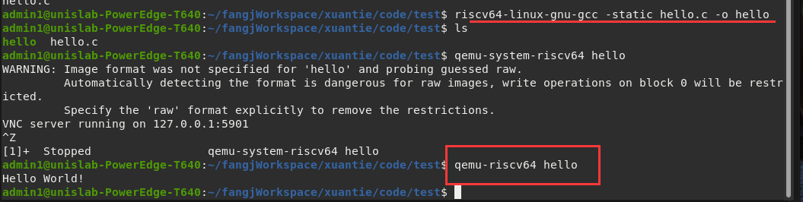

1、编译运行：Hello World
1.编写代码
#include <stdio.h>
int main(void)
{
printf("Hello World!\n");
return 0;
}
2.生成可执行文件
- 使用riscv的gcc交叉编译器在x86生成riscv的可执行文件
- 需要添加
-static编译选项。表示使用静态链接riscv64-linux-gnu-gcc -static hello.c -o hello
3.执行
- qemu-system-riscv64 对应system mode
- qemu-riscv64 对应user mode
- 这里应该使用user模式
qemu-riscv64 hello

#
2、系统模式下添加共享文件夹
①主机中创建共享文件夹
mkdir /home/jiangfang/share
②启动时添加如下两行参数：
path为主机中共享文件夹的位置
-fsdev local,security_model=passthrough,id=fsdev0,path=/home/jiangfang/share \
-device virtio-9p-device,id=fs0,fsdev=fsdev0,mount_tag=hostshare
③qemu中创建文件夹
mkdir /tmp/share
④挂载
mount -t 9p -o trans=virtio,version=9p2000.L hostshare /tmp/share/